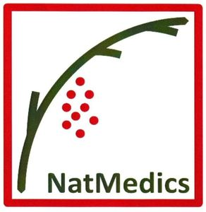

Trade Mark Journal No.2025/010 7 March 2025
WO0000001841222 (5)
Office of origin: European Union Intellectual Property Office (EUIPO)
Date of International Registration:30 May 2024
Date of designation in the UK:
30 May 2024

The mark contains the colours white, red and green.
International priority date claimed: 7 May 2024
(European Union Intellectual Property Office (EUIPO))
(019023424)
- Class 5
- Nutritional supplements; mineral dietary supplements; food supplements in liquid form; herbal supplements; plant-based antineoplastic preparations for the slowing of tumor growth and metastasis and strengthening of the immune system; natural dietary supplements for treating claustrophobia; pharmaceuticals and natural remedies; probiotic preparations for medical use to help maintain a natural balance of flora in the digestive system; drug delivery agents; allergy medication; biological preparations for medical purposes; mixed biological preparations for medical purposes; biochemical preparations for medical use; biological adjuvants for medical purposes; dragees [medicines]; tonics [medicines]; medicine; medicines for human purposes; nutritional supplements made of starch adapted for medical use; zinc dietary supplements; mineral food preparations for medical purposes; dietary supplemental drinks; nutraceuticals for use as a dietary supplement; dietary supplements for human beings; food supplements for sportsmen; dietary supplements in powder form; health-aid food supplements containing ginseng; pharmaceutical creams; medicinal creams for the protection of the skin; creams for dermatological use; barrier lotions for protection against poisonous plants; plant and herb extracts for medicinal use; anti-cancer preparations of plant origin; plant extracts, other than essential oils, for pharmaceutical purposes.
Natmedics GmbH
Representative: SCHNICK & GARRELS, Schonenfahrerstr. 7, 18057 Rostock, GERMANY